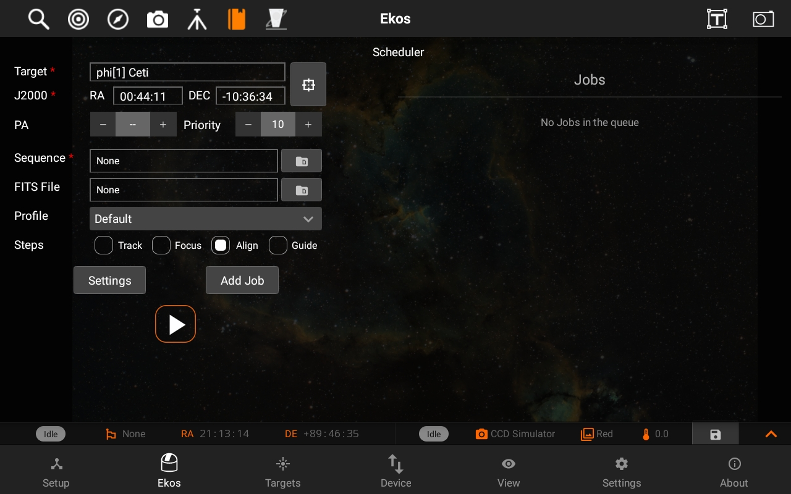
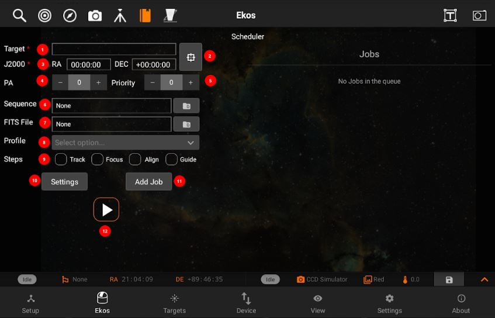
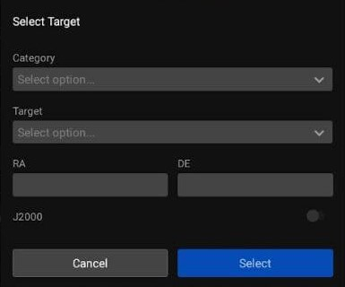
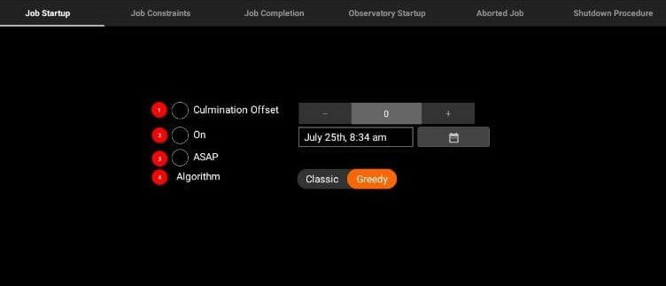
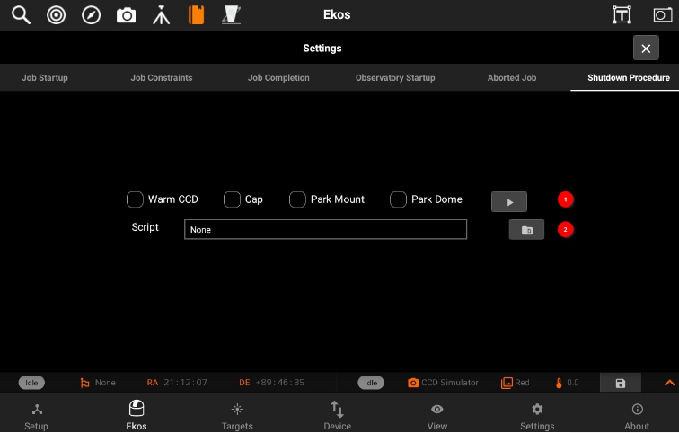
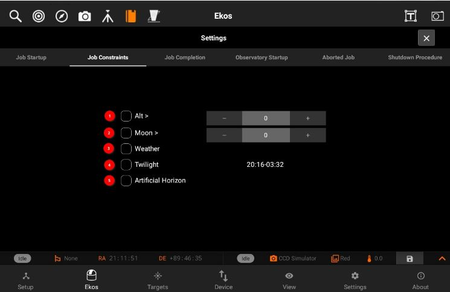
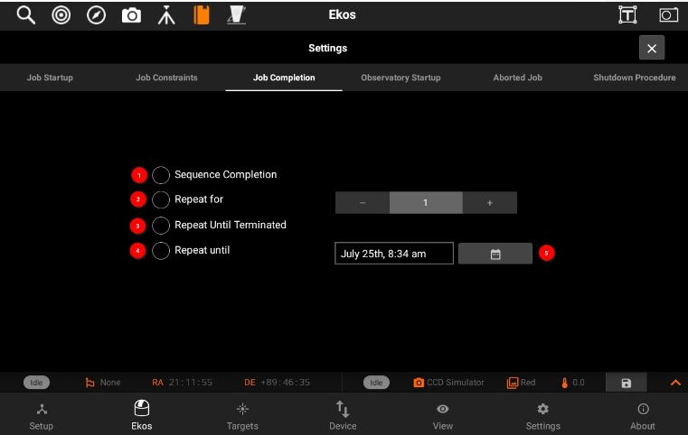
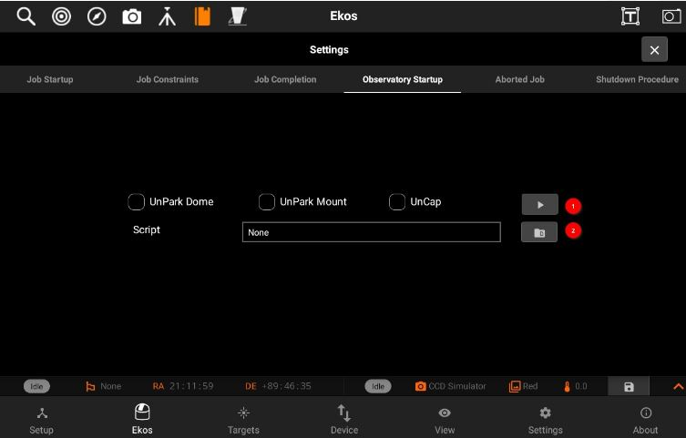
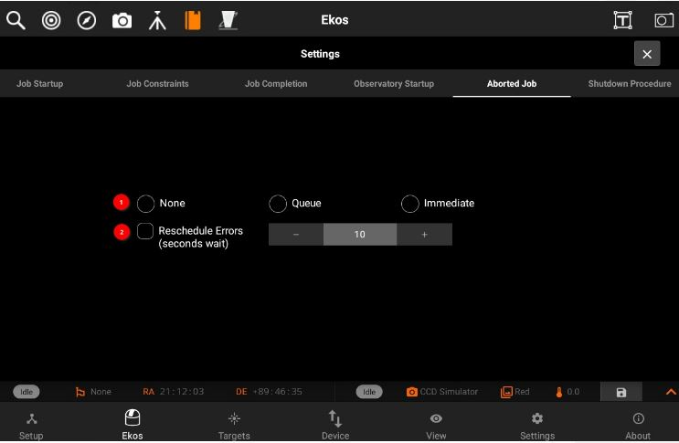
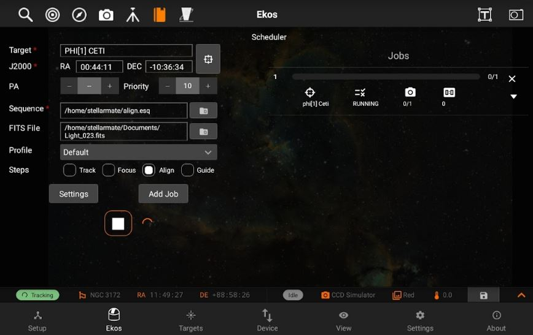

Scheduler
Ekos Scheduler is an indispensable arsenal in building your roboic observatory. A Robotic observatory is an observatory composed of several subsystems that are orchestrated together to achieve a set of scientific objectives without human intervention. It is the only Ekos module that does not require Ekos to be started as it is utlized to start and stop Ekos. It is designed to be straightforward and intuitive. However, the scheduler should only be used after you mastered Ekos and knows all the quirks of your equipment. Since the complete process is automated, including focus, guiding, and meridian flip. All equipment should be thoroughly used with Ekos and all their parameters and settings adjusted to achieve best result.
With Ekos, the user can utilize the powerful sequence queue to image batches of images for a particular target. In simple setups, the user is expected to focus the CCD, align the mount, frame the target, and start guiding before initiating the capture process. For more complex observatory environments, there are usually predefined custom procedures to be executed to prepare the observatory for imaging, and another set of procedures on shutdown. The user may plan to image one or more targets during the night, and expects data to be ready by morning. In KStars, tools such as the Observation Planner and What's up Tonight help the user in selecting candidates for imaging. After selecting the desired candidates, the user can add them to the Ekos Scheduler list for evaluation. The user may also add the targets directly in Ekos scheduler or select a FITS file of a previous image.


Ekos Scheduler provides a simple interface to aid the user in setting the conditions and constraints required for an observation job. Each observation job is composed of the following:
- Target name: Target name is displayed here.
- GOTO: Select the target from GOTO and it's name, coordinates get selected.

- J2000: RA and DEC are displayed of a specific target.
- Position angle: You can also specify and position angle.
- Priority: Set job priority in the range of 1 to 20 where 1 designates the highest priority and 20 the lowest priority. Priority is applied in calculating the weight used to select the next target to image.
- Sequence File: The sequence file is constructed in the Ekos Capture Module. It contains the number of images to capture, filters, temperature settings, prefixes, download directory..etc. You can select the file using Directory browser.
- Optional FITS file: If a FITS file is specified, the astrometry solver shall solve the file and use the central RA/DEC as the target coordinates. You can select the file using Directory browser.
- Profile: Select which equipment profile to utilize when starting Ekos. If Ekos & INDI are already started and online, this selection is ignored.
- Steps: The user selects which Ekos modules should be utilized in the observation job execution workflow.
- Startup Conditions: Conditions that must be met before the observation job is started. Currently, the user may select to start as soon as possible Now, or when the target is near or past culmination, or at a specific time.
- Constraints: Constraints are conditions that must be met at all times during the observation job execution process. These include minimum target altitude, minimum moon separation, twilight observeration, and weather monitoring.
Scheduler Settings:
1- Job Startup

- Culmination Offset: Start the observation job when the object reaches culmination adjusted for the offset value in minutes. By default, the observation job runs 60 minutes prior to culmination.
- ON: Start the job on the specified date and time.
- ASAP: Start the observation job as soon as all the contraints, if any, are met. The best candidate target shall be imaged first.
- Algorithm:
Classic: Start jobs that meet the constraints by priority and score.
Greedy: Always attempt to run a job. It picks the highest priority job that can run according to its contraints. It will interrupt running jobs if a higher priority job can run.

2- Job Constraints:

- Alt: The object's altitude must remain equal or higher than the given value.
- Moon: The moon separation must remain equal to or higher than the given value.
- Weather: Weather conditions must remain safe. When weather conditions become dangerous, shutdown procedure is initiated.
- Twilight: The twilight restriction constraints jobs to execute in astronomical darkness. Use the dusk and dawn offsets in the Ekos Scheduler options to adjust the interval.
- Artificial Horizon: The A.H restriction constrains the attitude of the target to be above the artifical horizon. If any are defined and enabled. See the artificial horizon item in the KStars Settings menu.
3- Job Completion:

- Sequence Completion: The observation job is completed when the sequence is complete.
- Repeat for: No. of times sequence will repeat.
- Repeat until teminated: Restrat the sequence job indefinetly.
- Repeat until: Terminate the job on given date and time.
4- Observatory Startup:

- UnPark dome: Park dome tohome position
- UnPark Mount: Park telescope to home position.
- Uncap: Open dust cover.
- Script: One time startup procedure to be executed before starting Ekos. The script is executed before the startup procedures (i.e Unpark scope), if Selected, are executed.
5- Aborted Job:

- None: Do not reschedule abored jobs.
- Queue: Reschedule aborted jobs as soon as all executable jobs are either completed or aborted.
- Immediate: Reschedule an aborted job immediately.
- ReSchedule errors: Treat errors like aborts. (Delay in seconds).
6- Observatory shutdown Procedure:

- Warm CC: Turn off CCD cooler.
- Cap: Close dust cover.
- Park Mount: Park telescope to home position.
- Park Dome: Park dome to home position.
- Script: One-time shutdown procedure to be executed after all Scheduler jobs are completed. The script is executed after the shutdown procedure (i.e Parking), If selected, are completed.

You must select the Target and Sequence before you can add a job to the Scheduler. When the scheduler starts, it evaluates all jobs in accord to the conditions and constraints specified and attempts to select the best job to execute. Selection of the job depends on a simple heuristic algorithm that scores each job given the conditions and constraints, each of which is weighted accordingly. If two targets have identical conditions and constraints, usually the higher priority target followed by higher altitude target is selected for execution. If no candidates are available at the current time, the scheduler goes into sleep mode and wakes up when the next job is ready for execution.
The description above only tackles the Data Acquisition stage of the observatory workflow. The overall procedure typically utilized in an observatory can be summarized in three primary stages:
- Startup
- Data Acquisition (including preprocessing and storage)
- Shutdown
Ekos Scheduler only initiates the startup procedure once the startup time for the first observation job is close (default lead time is 5 minutes before startup time). Once the startup procedure is completed successfully, the scheduler picks the observation job target and starts the sequence process. If a startup script is specified, it shall be executed first.
Data aquisition:
Depending the on the user selection, the typical workflow proceeds as following:
- Slew mount to target. If a FITS file was specified, it first solves the files and slew to the file coordinates.
- Auto-focus target. The autofocus process automatically selects the best star in the frame and runs the autofocus algorithm against it.
- Perform plate solving, sync mount, and slew to target coordinates.
- Perform post-alignment focusing since the frame might have moved during the plate solving process.
- Perform calibration and start auto-guiding: The calibration process automatically selects the best guide star, performs calibration, and starts the autoguide process.
- Load the sequence file in the Capture module and start the imaging process.